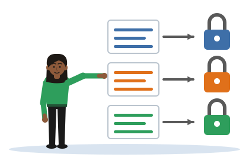

Which Provision Bites
[Illustrative example - do not cite] Tharindu, Chathura and Dilini are invented students, and their projects and organisations are invented too.
One idea
The method decides which provision bites. Three projects, one module, three different answers: and each answer can be read out of what the method touches, captures and produces.

The method feature, in the words of the notes: